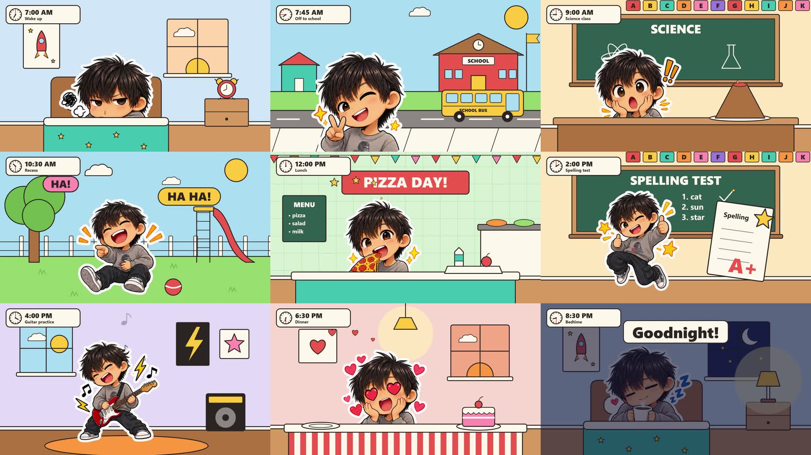

Nine frames taken from the final MP4, one from each scene.
Development Journey — "A School Day": a 45-second video made from 9 stickers, with code
Date: 2026-10-08 (local time, about 21:30–22:05)
Deliverable: school-day-45s/renders/school-day-45s-14lufs.mp4 — 1920×1080, 30 fps, 45.0 s, 30,351,135 bytes
Brief: "Read @stickers.png. can you use this sticker and create a video for this little boy in a school day from morning to bed time. use the same workflow as last one. AMIAQ"
Frame check of the final file: school-day-45s/snapshots/render-check.jpg (9 frames, one from each scene)
Written from: the live session transcript, at the end of the same session. No part is reconstructed from memory.
Live pages: video — https://az9713.github.io/claude-code-sticker-video/ ; this document — https://az9713.github.io/claude-code-sticker-video/development-journey.html
0. Read this first: how code makes a video
Most people think an AI video is "generated" as pixels. This video was not. No model drew a frame. Every frame is a web page that a browser draws, and a program takes a photo of it.
Here is the full idea in five sentences:
- A web page can draw shapes (SVG), show pictures (
<img>), and show text. - A JavaScript animation library (GSAP) can move those things according to a timeline: "at 12.5 s, the lava jumps up 200 px".
- A timeline can be paused and moved to any time, the same way you can drag a video's progress bar.
- A render tool (HyperFrames) opens the page in a hidden Chrome, moves the timeline to 0.000 s, takes a picture, moves to 0.033 s, takes a picture, and so on: 30 pictures for each second, 1350 pictures for 45 s.
- FFmpeg joins the 1350 pictures into an MP4 and mixes in the sound files that the page lists with their start times.
stickers.png ──(Python cuts)──► 9 PNG files ─┐
│
lib/library.js (sets, props, boy, clock) ─────┼──► index.html (one paused GSAP timeline, 45 s)
│ │
ElevenLabs voice + music, Python SFX ─────────┘ │ <audio data-start=...> tags
▼
npx hyperframes render: Chrome seeks t = 0, 1/30, 2/30 … 44.967 s
▼
1350 frames + audio mix ──FFmpeg──► school-day-45s.mp4
▼
ffmpeg gain + limiter ──► school-day-45s-14lufs.mp4 (the deliverable)
The rule that makes this possible: the page must draw the same picture every time it is asked for the same time.
That is why the code never uses Math.random() or the clock. A "random" lava splash uses a fixed number
generator with a fixed seed, so frame 377 is identical on every render.
The video is code in these places: the rooms, the props, the motion, the camera push-in, the clock badge, the colour wipes, the sound effects. It is not code in these places: the boy (9 stickers the user supplied), the narrator's voice and the music (both from ElevenLabs).
1. The brief — what was actually asked
The first message was the same request without "use the same workflow as last one". The user interrupted it and
sent it again with that phrase. The phrase points to Eric's method in ../claude-code-animation-workflow.md: style bible →
reusable library of named parts → a scene that uses only the library → voice, music, sound effects → render.
This document follows that method. It does not cover the earlier 30-second video (the user's instruction).
"AMIAQ" I read as "ask me if any questions". So I asked before I built (section 3.1).
What "use this sticker" could mean. The sheet stickers.png is 1254×1254 px, RGBA, transparent background,
3×3 grid, one boy in 9 poses: peace sign, guitar, pizza, sleepy with mug, laughing and pointing, surprised,
grumpy, thumbs-up jump, heart eyes. Two readings were possible: use the stickers themselves as cut-outs, or
draw a new code character that looks like them. That was the first question I asked.
2. Starting context
| Item | State at minute zero |
|---|---|
| OS / shells | Windows 11 Home, PowerShell and Git Bash |
| Node | v22.22.0 |
| HyperFrames CLI | hyperframes@0.8.143 (pinned per project) |
| FFmpeg | 7.1.1 in ~/AppData/Local/Microsoft/WinGet/Links, not on PATH. Every ffmpeg command needed export PATH="$PATH:$HOME/AppData/Local/Microsoft/WinGet/Links" first. (A private memory note from an earlier session already said so.) |
| Python libraries | Pillow, NumPy 2.2.6, SciPy 1.16.0, faster_whisper — all present |
| Rhubarb lip sync | Present at ../tools/rhubarb/…, not used (section 4) |
| ElevenLabs | MCP connector connected. ELEVENLABS_API_KEY not set, so the music / text-to-speech skills cannot run; the connector does not need the key. |
| Read first | A private resume file (not in this repo), ../claude-code-animation-workflow.md (the method), Eric's video description (his literal prompts) |
The resume file listed stickers.png as an unknown file that no session had opened. This session opened it.
Invisible rules that shaped the work (a reader of the video cannot see these):
- The user's standing rules: replies in ASD-STE100 Simplified Technical English; "default to the smallest change that
works"; "finish, or say what you left"; never kill a process by name.
- A "ponytail" hook was on (build the simplest thing that works). This is why there is one HTML file, one library
file, and no build system.
- The project's own CLAUDE.md (written by hyperframes init) says: load the HyperFrames skills before you write
a composition, and run npm run check after every change.
3. The pipeline, step by step
Times are local, from file timestamps. The whole build, from the empty project to the final file, took about 30 minutes.
3.1 Ask the questions (tool: AskUserQuestion)
I asked 4 questions, each with a recommended option. The user took all 4 recommendations:
| Question | Options | Answer |
|---|---|---|
| How to use the stickers | Cut-outs / redraw as an SVG rig | Cut-outs. The boy looks exactly like the stickers. Cost: no lip sync, because a picture's mouth cannot move. |
| Length | 30 s / 45 s / 60 s | 45 s — 9 scenes at about 5 s each |
| Sound | Narrator + music / boy's voice + music / music + SFX only | Narrator + music |
| Day plan | My 9-step plan / change it | The plan: 7:00 wake up (grumpy) → 7:45 off to school (peace) → 9:00 science (surprised) → 10:30 recess (laughing) → 12:00 lunch (pizza) → 2:00 test (thumbs up) → 4:00 guitar → 6:30 dinner (heart eyes) → 8:30 bedtime (sleepy with warm milk) |
How I matched stickers to times: each sticker has one clear emotion, so I gave each one the moment of a school day where that emotion fits. The sleepy sticker (mug, "zZ") fits both breakfast and bedtime; I kept it for bedtime so the video ends on it.
I did not run the superpowers:brainstorming skill that the session start text says to use before creative work.
The 4 questions did its job here.
3.2 Make the project (tool: HyperFrames CLI)
HYPERFRAMES_SKIP_SKILLS=1 npx --yes hyperframes@0.8.143 init school-day-45s --example blank --non-interactive --resolution landscape
This wrote index.html (an empty composition), package.json (scripts pinned to hyperframes@0.8.143),
hyperframes.json, meta.json, CLAUDE.md and AGENTS.md (rules for the AI). A HyperFrames project is just a
folder with a web page in it. There is no special file format.
3.3 Cut the 9 stickers (tools: Python, Pillow, NumPy, SciPy)
A PNG with transparency has a 4th channel, alpha: 0 means "nothing here", 255 means "solid". Each sticker
is an island of solid pixels in a sea of alpha 0. SciPy's ndimage.label finds islands (it is the same idea as a
"paint bucket" fill that counts the separate areas).
- Mark every pixel with alpha > 16 as solid.
ndimage.labelfound 49 islands.- Put each island in the grid cell (3×3, 418 px each) that holds its centre.
- Drop islands smaller than 200 px. 40 islands were dust (stray specks). In each cell exactly 1 island was bigger than 200 px — the whole sticker, because the white die-cut border joins the "zZ", "!!", hearts and stars to the boy.
- Crop each sticker to its own box and save it:
assets/stickers/{peace,guitar,pizza,sleepy,laugh,surprised,grumpy,thumbs,hearts}.png. The sizes were 338–386 px wide and 340–426 px high. - Paste all 9 on a blue sheet and look at it (
scratchpad/cut-check.png).
Near-miss. The 200 px filter could have dropped a real part of a sticker (a separate "Z", a separate heart). The blue check sheet is what proved it did not: every "zZ", "!!", star and heart was still there. Rule learned: a filter that throws data away needs a picture that shows what is left.
- Upscale 2× with Lanczos (Pillow
Image.LANCZOS). On screen the boy is 600–720 px high, so the small files would be stretched 1.6–2× by the browser. Pillow's Lanczos filter makes a cleaner bigger image than the browser's live scaling. New sizes: e.g.grumpy740×680,guitar720×852. The original sheet is kept, so this is reversible.
3.4 Load the HyperFrames rules (tool: Skill)
hyperframes-core— the contract a page must follow to be rendered. The rules that mattered here: one paused timeline registered aswindow.__timelines["main"]; every timed element hasdata-startanddata-duration; every<audio>has anid(an audio tag with no id is silently left out of the mix); never animate a.clipelement's visibility (the renderer owns that); noMath.random, no clock.hyperframes-animation— GSAP rules: only move things withx,y,scale,rotation,opacity; never set a CSStransformon something GSAP also moves.
3.5 First advisor consultation (tool: advisor)
Before I wrote anything, I asked the stronger reviewer model. It changed the plan in these ways:
- Voice before timing. Make the narration first, then put the scene changes on the spoken words. Do not fix
"5 s per scene" before the voice exists.
- Bust stickers. 6 stickers (peace, pizza, sleepy, surprised, grumpy, hearts) are cut flat at the
bottom. Their bottom edge must go behind a blanket, desk or table, or below the frame, or the boy looks like a
floating torso. This became a rule in the style bible and drove the set design.
- Upscale in Pillow, not in the browser (step 3.3, point 7).
- <img> under GSAP must be display:block and have an explicit size.
- No shader transitions — that render path makes the page background transparent.
- Load hyperframes-animation too (step 3.4).
- Update the resume file at the end.
3.6 Write the script (file: dialog.txt)
Nine lines, one for each scene, about 80 words:
Seven o'clock. Beep, beep, beep! Somebody is not ready to get up.
Teeth brushed, backpack on. Off to school he goes!
Nine o'clock, science class. The volcano erupts. Whoa!
Recess! His best friend tells the funniest joke ever.
Twelve o'clock. Pizza day is the best day.
Two o'clock. The spelling test comes back... a gold star!
After school, guitar practice. Time to rock!
Dinner with the family, and Mom made his favorite dessert.
Warm milk, a sleepy yawn. Goodnight, little one.
The boy has no name. The user gave none, so the narrator says "he" and "little one".
3.7 Make the narrator voice (tools: ElevenLabs MCP connector)
creative_list_voiceswithsearch: "warm storyteller children",languages: ["en"],use_cases: ["narrative_story"]. It returned 23 voices. I picked "Hope - The Storyteller" (cVd39cx0VtXNC13y5Y7z): "warm, expressive … Perfect for children's books". It was the only result already in the workspace (not a library voice).creative_create_flow→ flowdR8hnDISVePicE90tfvr("School day 45s — sticker boy"), so voice and music sit on one canvas.creative_generate_speechwithmodel_id: eleven_v4,generations_count: 1(the default is 4 takes at 4× cost), the 9 lines separated by blank lines.creative_get_flow_run_statusuntilall_completed. Thencurldownloaded the MP3 toassets/voice-full.mp3.
Result: 28.96 s, 487.974 credits (US$0.0813). My target was up to 41 s. The voice read faster than planned. Section 4 explains how this changed the timing design.
3.8 Make the music (tool: ElevenLabs creative_generate_in_flow, node_type: music, model_id: eleven_music_v2)
Prompt: "45 seconds, instrumental only, no vocals. Playful, warm children's cartoon underscore: ukulele, glockenspiel, light pizzicato strings, soft hand claps, gentle 105 BPM. Bright and bouncy for the first 35 seconds, then it slows and softens into a quiet music-box lullaby for the last 10 seconds …"
Result: 45.0 s (ffprobe: 45.024 s), 1800 credits (US$0.30).
Two checks, because the status said Instrumental: False and Lyrics type: auto although the prompt said "no vocals":
- Vocals? faster_whisper with vad_filter=True (voice activity detection) found no speech segments.
- Loudness over time (ffmpeg … -af volumedetect on 3-second windows): −20.0 dB at 0 s, −19.8 at 10 s,
−20.2 at 20 s, −17.9 at 30 s, −18.5 at 36 s, −39.8 at 40 s, −66.7 at 43 s. The track does not play a
lullaby; it fades out by about 40 s. I accepted that and added a coded music-box sound for bedtime (step 3.10).
3.9 Find the word times and cut the voice into 9 lines (tools: faster-whisper, ffmpeg silencedetect, ffmpeg)
- Word times.
WhisperModel('base.en', device='cpu', compute_type='int8')withword_timestamps=Truegives a start and end time for every word. Saved inwords.txt. Example: "volcano" 8.98–9.38 s, "erupts" 9.38–10.04 s. - Silences.
ffmpeg -af silencedetect=noise=-38dB:d=0.12lists every pause longer than 0.12 s quieter than −38 dB. - Cut points = the middle of the pause between two lines: 0, 3.75, 7.0, 10.88, 14.29, 17.02, 20.46, 23.26, 25.94, 28.96 s.
- Cut each line with ffmpeg (
-ssstart,-tlength) and a 0.02 s fade in and 0.04 s fade out, so a cut never clicks. Files:assets/vo-1.mp3…vo-9.mp3, lengths 3.79, 3.29, 3.92, 3.45, 2.77, 3.47, 2.85 (2.80 for the player), 2.72, 3.06 s.
3.10 Make the sound effects with code (tool: make_sfx.py, Python standard library only)
A WAV file is a long list of numbers between −1 and 1, 44,100 per second. A sound effect is a formula that
makes that list. make_sfx.py writes 9 files; it uses a seeded random generator (random.Random(7)), so the
files are the same on every run.
| File | How the formula makes it |
|---|---|
sfx-alarm.wav |
A 2.2 kHz square wave (the sign of a sine), on 0.09 s, off 0.05 s: three double beeps |
sfx-whoosh.wav |
Random noise through a filter whose brightness rises then falls, 0.45 s |
sfx-bell.wav |
Three bell tones (1250, 2710, 4100 Hz) struck again 12 times a second, 1.3 s |
sfx-fizz.wav |
A low thump that slides from 90 Hz down, plus hissing noise that fades — the volcano |
sfx-sparkle.wav |
Four glockenspiel notes C6–E6–G6–C7 that each ring and die away |
sfx-strum.wav |
Karplus-Strong plucked strings: a short burst of noise is fed round a loop and averaged each pass, which sounds like a string. Six strings of an E major chord, 25 ms apart |
sfx-pop.wav |
A 0.12 s tone that drops in pitch |
sfx-twinkle.wav |
A music-box phrase E5 D5 C5 D5 E5 E5 E5, 0.42 s apart — replaces the missing lullaby |
sfx-boing.wav |
A wobbling tone that dies away, for the laugh |
3.11 Write the style bible (file: style-bible.md)
This is Eric's step 2: one page that every scene must obey. Key rules:
- The boy is only a sticker PNG. Never redraw, recolor or crop him, never remove the white border.
- Bust stickers hide their flat bottom behind a prop or below the frame.
- One sticker on screen at a time, 600–720 px high; motion pivots at the bottom centre.
- Palette: ink #2b2420 for every outline and text; paper #fff8ec; sweater grey #8c8783 and skin #fdbf81
sampled from the stickers with Pillow; sky per time of day — dawn #ffd6a8, day #a8dcf2, dusk #f7a983,
night #22305c.
- 6 px outlines, round joins, flat fills, no gradients, no blur, no shadows.
- Cuts hide behind a full-frame colour wipe (0.25 s in, 0.3 s out) with a whoosh.
3.12 Build the library (file: lib/library.js, 421 lines)
This is Eric's step 3 and the centre of the method: build each part once, give it a name, then direct it. The scene file never draws a shape itself. It only calls names.
Layers. stage(section) gives each scene 4 stacked layers inside a .cam box (the camera):
.cam (scales 1.00 → 1.06 for a slow push-in)
├─ back <svg> the room: wall, window, furniture behind the boy
├─ slot <div> the boy (an <img>)
├─ front <svg> things in front of him: blanket, desk, table
└─ fx <svg> stars, hearts, notes, lava, word bubbles
Because the blanket is in front and the boy is in slot, the boy is really "in bed". That is how the flat
bottom of a bust sticker is hidden.
Sets (each draws back and front): bedroom (sky: "dawn" with a rising sun and the alarm clock, or
sky: "night" with moon, twinkling stars and a lamp), street (houses, school, road, school bus), classroom
(board: "SCIENCE" with a lab desk and volcano, or board: "SPELLING TEST" without a desk), playground,
cafeteria (banner "PIZZA DAY!"), musicRoom (amp, posters), dining (lamp, cake, striped tablecloth).
Every shape is SVG written as text: a rectangle is <rect x=… y=… width=… height=…>, a star is a 10-point path
computed with sine and cosine, a heart is two curves.
Named props. A prop that moves is wrapped twice: an outer <g transform="translate(x y)"> puts it in place,
an inner <g data-name="bus"> is what GSAP moves. A set returns all named parts, so the scene can write r.bus,
r.alarm, r.lavaDrip. (Two layers are needed because GSAP rewrites the transform of what it moves; if the
position were on the same element, moving x could lose y.)
The boy. boy(stage, "pizza", { x: 800, bottom: 1000, h: 660 }) places the sticker by its bottom-centre and
returns 5 named motions:
| Motion | What GSAP does |
|---|---|
pop(tl, at) |
Sticker slaps on: scale 0.2 → 1, rotation −10° → 0, opacity 0 → 1, back.out(2.2) overshoot, 0.45 s |
hop(tl, at, height, times) |
Moves up and back down (yoyo) |
squash(tl, at) |
Short and wide for 0.12 s, then back |
wiggle(tl, at, deg, times) |
Fast left-right rotation |
sway(tl, at, dur, deg) |
Slow rocking, for the guitar and for sleep |
Floaters. fx(stage, "heart", x, y, count, seed) makes count copies at one point. The scene then moves
each copy up and out. Positions come from a seeded LCG generator (s = s * 1664525 + 1013904223), never from
Math.random(), so every render is the same.
Clock badge. UI.clockBadge(parent, items) draws a clock face and 9 stacked labels ("7:00 AM / Wake up" …).
The hands only turn forward, so their angles are counted from the start, not taken modulo 360:
hour hand = minutes since midnight × 0.5°; minute hand = (minutes − 420) × 6°. From 7:00 to 8:30 PM the minute
hand turns 810 × 6 = 4860°, 13.5 full turns, spread over 8 scene changes of 0.6 s each.
3.13 Direct the scene (file: index.html, 231 lines)
Clips. Nine <section class="clip"> elements, data-start 0, 4.8, 9.6 … 38.4, data-duration 4.8 (the last
one 6.6). The renderer shows a clip only inside its time window, so a scene change needs no code.
One more clip, #overlay, runs 0–45 s and holds the clock badge, the 8 colour wipes and the final fade.
Sound. 32 <audio> tags (1 music, 9 narrator lines, 22 sound effects), each with id, src, data-start, data-duration, data-volume. Narrator line i
starts 0.5 s after its scene (line 1 at 0.6 s). The music bed is turned to volume 0.22 by a timeline tween.
Timeline. One gsap.timeline({ paused: true }) holds every move, at absolute times. The cues come from
words.txt: global time = scene start + 0.5 + the word's time inside its cut line. Examples:
| Time (s) | What happens | Why that time |
|---|---|---|
| 0.05–1.37 | Alarm clock shakes, sfx-alarm |
Before the narrator's own "beep, beep, beep" at 1.5 s |
| 2.7, 3.3 | Boy squashes, then wiggles "no" | "Somebody is not ready…" |
| 5.3–8.9 | School bus drives across behind him | Line 2 |
| 7.3 | Boy hops twice | "Off to school he goes" |
| 12.45–13.1 | Volcano squashes, sfx-fizz, lava drip appears, 14 lava blobs fly |
"erupts" (orig. 9.38 s → 12.48 s) |
| 13.5 | Boy hops, "WHOA!" bubble | "Whoa" |
| 17.2 | "HA HA!" and "HA!" bubbles, 3 hops, sfx-boing at 17.25 |
"funniest joke" |
| 19.35 | "PIZZA DAY!" banner drops with bounce.out |
Start of line 5 |
| 25.6 | Test paper flies in from the right | "the spelling test comes back" |
| 27.0 | Paper pulses, 8 stars fly, sfx-sparkle, boy hops |
"a gold star" (orig. 19.58 s → 27.06 s) |
| 29.9, 31.5 | sfx-strum, notes float, amp pulses |
"guitar", "rock" |
| 36.1–36.3 | Cake pops in, hearts float, wiggle | "favorite dessert" |
| 40.0 | Three "Z" float up | "a sleepy yawn" |
| 41.3 | sfx-twinkle music box |
After "Goodnight, little one" |
| 41.9–42.8 | Night dim to 60% | Lights out |
| 42.5 | "Goodnight!" card | |
| 44.2–45.0 | Fade to black | End |
Wipes. At each of the 8 cuts a full-frame coloured panel slides in from the left in 0.25 s (ending exactly at the cut), then out to the right in 0.3 s. The scene change happens while the panel covers the frame. A whoosh starts 0.25 s before each cut.
3.14 Check (tool: npx hyperframes@0.8.143 check)
check loads the page in Chrome and runs 5 audits: lint (code rules), runtime, layout (overlaps, text cut off),
motion, contrast. First run: failed — see section 5, items 4–6. After the fixes: 0 errors; 3 lint warnings
kept on purpose; 24 info notes (most say that the 1.06 camera push-in makes layers extend past the frame edge,
which is intended).
3.15 Snapshots (tool: npx hyperframes@0.8.143 snapshot)
npx hyperframes@0.8.143 snapshot --at 3.0,7.5,13.3,17.6,21.5,27.4,31.7,36.8,43.0 --describe false
This saves still frames at exact times and a contact sheet. Looking at them found 2 bugs that check passed
(section 5, items 7–8). Two more rounds (-o snapshots/fix1, -o snapshots/fix2) confirmed the fixes.
Rule learned: a passing check proves the rules; only a picture proves the video.
3.16 Render (tool: npx hyperframes@0.8.143 render -o renders/school-day-45s.mp4)
The CLI reported: 1350 frames, rendered in 1 min 7.3 s, drawelement capture, hardware GPU (Intel UHD
Graphics through ANGLE/Direct3D11), 3 workers; stages: compile 3.8 s, audio 2.1 s, probe 3.0 s, capture and
encode 59.0 s, assemble 1.6 s. Output 28.9 MB, H.264 video + AAC audio, 45.000 s each.
3.17 Loudness (tool: ffmpeg)
Streaming platforms play audio at about −14 LUFS (LUFS = loudness as people hear it, averaged). The raw render measured −19.3 LUFS, true peak −5.91 dBTP. True peak must stay below about −1 dBTP, or the sound distorts on some players. It took 4 tries (section 5, item 9). The final command:
ffmpeg -i school-day-45s.mp4 -af "aresample=192000,volume=6.6dB,alimiter=limit=0.7:level=disabled:attack=1:release=50,aresample=48000" \
-c:v copy -c:a aac -b:a 192k -t 45 school-day-45s-14lufs.mp4
It makes the sound 6.6 dB louder, catches peaks with a limiter at 0.7 (−3.1 dBFS) at 4× sample rate, copies the
video untouched, and keeps exactly 45 s. Result (ebur128): −13.8 LUFS, LRA 9.7 LU, true peak −2.2 dBTP.
3.18 Final verification
ffprobe: h264 1920×1080 30/1 fps 45.000 s; aac 45.000 s.- Whisper on the final mix found each narrator line at 0.00, 5.18, 9.86, 14.94, 19.44, 24.18, 29.68, 33.70, 38.64 s — each within 0.5 s of its planned start, inside its own scene.
- 9 frames taken from the final MP4 with ffmpeg
select+tile=3x3→snapshots/render-check.jpg. All 9 scenes, stickers sharp, badge times correct (7:00 AM … 8:30 PM).
3.19 Second advisor consultation, and the records
The advisor said "ship it" and asked for 2 flags in the report (line 9 pronunciation; nobody has listened yet) and
one fix: the private resume file's "Next task" named only the old video. I added the 45-second video and the loudness recipe
there, and added the run log (now §7) to ../claude-code-animation-workflow.md.
4. Design decisions — what was chosen and what lost
| Decision | Chosen | Rejected, and why |
|---|---|---|
| The boy | Sticker cut-outs | SVG rig redrawn in sticker style: lip sync possible, but he would only look similar. The user chose identical. |
| Lip sync | None | Rhubarb gives mouth shapes, but a sticker has no separate mouth to swap. |
| Voice production | One take, cut into 9 lines | 9 separate takes: 9 jobs to wait for, and the voice can drift between takes. Regenerate one slower take: costs credits again and still gives no control of where each line falls. |
| Scene timing | Fixed grid: 4.8 s per scene, line starts 0.5 s in | Timing driven by the full take: with a 28.96 s take, 45 s of video would leave 16 s of silence. Cutting lines and putting them on a grid fills 45 s evenly. (This overrode the advisor's "scene starts on the first word"; the cut lines keep the spirit — every cue still sits on a measured word time.) |
| Structure | 9 timed <section> clips in one file |
One 45 s clip (needs code to show/hide scenes); 9 sub-composition files (more files, the lint warns it would be "easier to read", but more to wire). |
| Transitions | Colour wipe panels | Shader transitions: they switch the render to a transparent background path. Crossfades: two busy rooms mixed look muddy. |
| Upscaling | Pillow Lanczos 2× once | Browser scaling at render: softer edges. |
| Bedtime music | Coded music box | Regenerate music: 1800 more credits for 5 seconds. |
| Captions | None | Not asked. The clock badge names each scene. |
| Boy's name | None | Not given; I did not invent one. |
| Other people | Shown by props only (lunch tray, family table, plates) | Drawing a mother or a friend would add characters that are not stickers and break the style. |
5. What went wrong, and the fixes
- The first request was interrupted by the user and re-sent with "use the same workflow as last one". I had only read files at that point; nothing was lost.
- The voice was 28.96 s, not ~41 s. Fix: cut it into 9 lines and place them on a fixed grid (section 4).
- The music ignored half of its prompt. It has no lullaby ending and fades out by 40 s (−39.8 dB at 40 s,
−66.7 dB at 43 s), and the run settings said
Instrumental: False. Fix: Whisper VAD check (no vocals found); codedsfx-twinkle.wavfor bedtime. Lesson: a generator's prompt is a request, not a spec — measure the output. checkerror — layout:content_overlap … "Z" — Two text blocks overlap and may render unreadable.at t = 40.75–42.25 s. The three floating "Z" letters used a spread of 120 px, so their x offsets were −60, −43, −26 px. Fix: spread 300 px (offsets −150, −13, +124 px).checkerror — contrast:… text 1.22:1 (need 3:1, t=42.5s). The last "Z" was still fading (almost transparent) when the audit sampled it. Fix: shorter float (gap: 0.4, dur: 1.6), so the last Z is gone by 42.4 s.checkwarning:clip_media_fit: Audio "vo-7" is 2.80s but its slot (data-duration) is 2.85s.ffprobesaid 2.847 s, the player measured 2.80 s. Fix:data-duration="2.8". Also info notestext_occluded: the clock badge covered the alphabet strip letters A–E, and the boy covered "2. sun" and "3. star" on the board. Fix: the strip now starts at x = 620 with 11 letters (A–K); the spelling words moved to x = 1000.- Snapshot bug (passed
check): no night, no "Goodnight!". At 43 s the room was still bright. Cause: the.dimlayer and the title were written into#s8beforestage()added the camera box, so the camera box was drawn on top of them. Fix:z-index: 2on.dim,z-index: 3on the title. That then put the dim above the clock badge and above the final black fade, so a second fix:#overlay { z-index: 5; }. Rule learned: in HTML, what is added last is drawn on top — unless you say otherwise. - Snapshot bug: word bubbles too small. "HA HA!" was wider than the yellow star behind it. Fix:
word()now draws a rounded pill whose width is computed from the text length (text.length × size × 0.36 + 40on each side). - Loudness: 4 tries.
| Try | Method | Result |
|---|---|---|
| 1 | Two-pass loudnorm=I=-14:TP=-1.5 (measured −19.30 / −5.91 / 9.80 / −29.96, offset 0.81), linear=true |
−14.1 LUFS, true peak +0.5 dBFS — over 0 |
| 2 | volume=5.4dB, alimiter=limit=0.75 |
−14.5 LUFS, true peak −0.7 dBFS — still above −1 |
| 3 | volume=5.8dB, alimiter=limit=0.6 |
−14.8 LUFS, true peak −4.0 dBFS — too cautious |
| 4 | volume=6.6dB, alimiter=limit=0.7 |
−13.8 LUFS, −2.2 dBFS — kept |
I did not prove why try 1 overshot. The likely cause is the AAC encoder adding peaks after loudnorm measured.
- Near-miss: code outside the library. My first version of scene 5 built the test paper with raw
innerHTMLinindex.html, plus a useless lineconst paper = add => add;. That broke the "use only the library" rule before any render. Fix: a new library functionprop(stage, "testPaper", 1380, 600, 8). - Hook warnings not acted on. A security hook warned about
innerHTML(all strings are fixed text in the library, no user input) and asked forintegrity=on the GSAP<script>tag. I did not add it: the tag is the onehyperframes initwrites, pinned togsap@3.14.2. This is an accepted risk, not a fix. - Possible pronunciation problem. Whisper heard "asleep beyond" for "a sleepy yawn" — on the clean voice file and on the final mix. Whisper also mishears words under music ("his valing test", "Four o'clock, start"), so this may be Whisper, not the voice. Not resolved. A person must listen to 38.9–42.0 s.
6. Tools used — what each one did in this session
| Tool | What it did here |
|---|---|
| Claude Code (model Opus 5.5) | Wrote all code, ran all commands. No subagents; all work inline. |
AskUserQuestion |
The 4 design questions (section 3.1) |
advisor (stronger reviewer model) |
Two consultations: before building (changed 7 things, section 3.5) and before finishing (2 report flags, 1 resume-file fix) |
Skill: hyperframes-core, hyperframes-animation, dev-journey |
Rules of the composition; GSAP rules; this document |
HyperFrames CLI 0.8.143 (init, check, snapshot, render) |
Project, audits, still frames, final render (Chrome + FFmpeg inside) |
| GSAP 3.14.2 (from cdn.jsdelivr.net) | The timeline and every movement |
| SVG (in the browser) | Every room and prop, drawn from text |
| Python + Pillow | Read the sticker sheet, crop, upscale 2× Lanczos, sample colours, make check sheets |
NumPy + SciPy (ndimage.label, find_objects) |
Found the 49 islands in the sticker sheet |
Python standard library (wave, struct, math, random) |
make_sfx.py: all 9 sound effects |
| ElevenLabs MCP connector | creative_list_voices, creative_create_flow, creative_generate_speech, creative_generate_in_flow (music), creative_get_flow_run_status |
curl |
Downloaded the voice and music MP3s from the signed URLs |
faster-whisper (base.en, CPU, int8) |
Word times of the voice; vocal check of the music; timing check of the final mix |
| ffmpeg 7.1.1 / ffprobe | silencedetect, cutting lines, volumedetect, loudnorm, alimiter, ebur128, frame tiling, duration checks |
| Not used | Rhubarb Lip Sync (no lip sync with stickers); Eric's step-1 style stills (the stickers fix the look); Epidemic Sound / Pixabay (ElevenLabs + code instead) |
7. Costs and limits
| Item | Amount |
|---|---|
Voice (ElevenLabs eleven_v4, 28.96 s) |
487.974 credits, US$0.0813 |
Music (ElevenLabs eleven_music_v2, 45 s) |
1800 credits, US$0.30 |
| Total paid generation | 2287.974 credits, about US$0.38 |
| Render | 1 min 7.3 s for 1350 frames on this laptop's Intel UHD GPU |
| Everything else | Local and free: Python, ffmpeg, Whisper, HyperFrames |
No rate limit or quota was hit. The ElevenLabs download links are signed and expire 2 hours after they were made
(X-Goog-Expires=7200); the files are saved in assets/, and the flow (section 8) keeps the originals.
8. Where things stand
Done. renders/school-day-45s-14lufs.mp4 (deliverable) and renders/school-day-45s.mp4 (raw render, −19.3 LUFS; not in the repo, a render rebuilds it).
Not done, and why: - Lip sync — the stickers have a fixed mouth (the user's choice in 3.1). The video stands without it: a narrator speaks, not the boy. - Eric's step 1 (four style stills) — the stickers set the look. - No person has listened to the audio. Every audio check was a machine check. Untested by ear: line 9 (item 12 above), the music level 0.22, and the effect levels (alarm 0.3, whooshes 0.35, strums 0.45/0.55, twinkle 0.4, fizz 0.45, bell 0.2). - The user had not reviewed the video when this was written.
Files in the project:
| File | Role |
|---|---|
index.html |
The scene: clips, audio tags, the timeline (the "director") |
lib/library.js |
The reusable parts (the "studio") |
style-bible.md |
The rules every part follows |
dialog.txt |
The narration script |
assets/stickers/*.png |
The 9 cut-out stickers (2×) |
assets/vo-1.mp3 … vo-9.mp3, assets/music.mp3, assets/sfx-*.wav |
Sound used in the video |
assets/voice-full.mp3, words.txt, make_sfx.py |
Sources to rebuild the sound |
snapshots/ |
Check frames; render-check.jpg is from the final MP4 |
Records updated: a private resume file (current state, loudness recipe, next task: review this video and listen
to line 9); ../claude-code-animation-workflow.md §7 (run log).
How to change the video (recipes):
- Move a cue: change its time in index.html (all times are global seconds).
- Change what a scene looks like: edit that set in lib/library.js; both scenes that use it change.
- Swap a sticker: change the name in boy(st[i], "name", {...}).
- Fix line 9: generate only that line again (same voice, eleven_v4, text "Warm milk, one sleepy yawn. Goodnight,
little one."), save as assets/vo-9.mp3, set its data-duration.
- After any change:
1. cd school-day-45s
2. npx hyperframes@0.8.143 check
3. npx hyperframes@0.8.143 render -o renders/school-day-45s.mp4
4. The loudness command in 3.17 (export PATH="$PATH:$HOME/AppData/Local/Microsoft/WinGet/Links" first).
9. Glossary
| Term | Meaning here |
|---|---|
| Frame | One still picture. This video has 30 per second, 1350 in total. |
| Composition | The web page that HyperFrames renders (index.html). |
| Clip | An element with data-start and data-duration; it is visible only in that window. |
| Timeline | GSAP's list of "at time T, move X to Y". Paused, so the renderer can jump to any time. |
| Seek | Jump the timeline to an exact time. The renderer seeks once per frame. |
| Deterministic | The same time always gives the same picture. Required, because frames are rendered in parallel and out of order. |
| SVG | Shapes described as text (<rect>, <circle>, <path>), drawn by the browser at any size. |
| Alpha channel | The transparency value of each pixel. Used to find the stickers. |
| Lanczos | A resize filter that keeps edges sharp when an image is made bigger. |
| Ease | The speed curve of a move (back.out overshoots, bounce.out bounces). |
| LUFS | Loudness as people hear it. −14 LUFS is the common streaming level. |
| dBTP / true peak | The highest point of the waveform, including peaks between samples. Keep below −1. |
| Karplus-Strong | A short formula that makes a plucked-string sound from a burst of noise. |
| MCP connector | A plug-in that lets Claude call an outside service (here ElevenLabs) as a tool. |